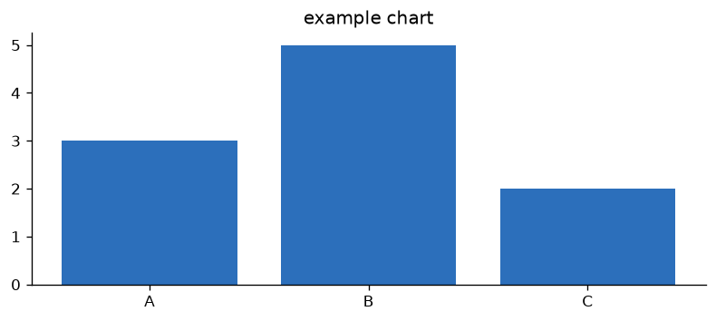

Body copy. Use bold for the numbers and phrases you want to land. Keep paragraphs short.
A second paragraph of supporting copy.
One or two sentences.
One or two sentences.
One or two sentences.
Lead-in text for the figure below.

A highlighted fact. Variants: fact blue and fact red.
The strongest point goes in a dark callout so it cannot be missed.
Short copy.
Short copy.
Short copy.
| Column A | Column B |
|---|---|
| Highlighted row | None use the us class to spotlight your own row. |
| Label | Partial verdict pills: v-good / v-part / v-bad. |